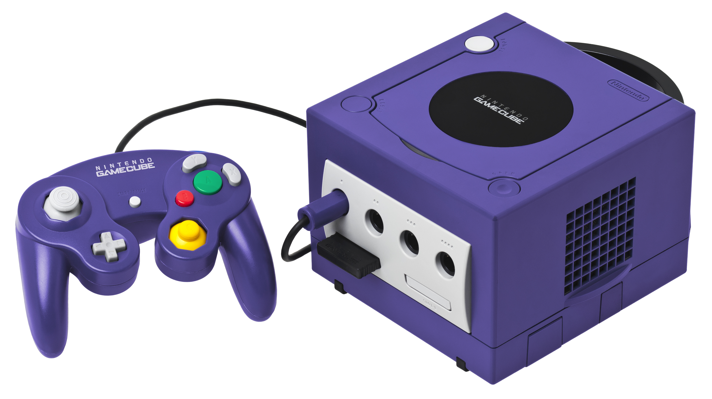

GameCube
The GameCube was the successor to the Nintendo 64, released on September 14, 2001. The console is the first to Nintendo console to use optical discs, similar to miniDVD format and had a small size. The console supported online gaming for only a small number of games. The console was praised for its controller, extensive software library, and high-quality games, but was criticized for its exterior design and lack of features. The console has sold 21 million units worldwide.
Wii

The Wii was the successor to the GameCube, released on November 19, 2006. The console targeted a broad demographic. The console introduced a controller that could be used as a handheld pointing device and detect movement in three dimensions. the console featured a game download service called "Virtual Console", featuring emulated games from past Nintendo systems. It supported backwards-compatibility with GameCube games. The console has sold 101 million units worldwide.
Wii U

The Wii U was the successor to the Wii, released on November 8, 2012. The console was the first of Nintendo's to support HD graphics. The system's primary controller is the Wii U Gamepad, featuring a touchscreen and a combination of directional buttons, analog sticks, and action buttons. The screen of the Wii U Gamepad can be used to supplement to the main display on the TV or to play certain games independently from the TV. The consoler offers backwards compatibility with the Wii games. The console's online features revolve around the Nintendo Network Platform and Miiverse, a social networking service that allows users to share content. The console has sold 13 million units worldwide.
Nintendo Switch

The Nintendo Switch was the successor to the Wii U, released on March 3, 2017. The console is a hybrid, designed primarily as a home console but also can be used as a handheld. The console uses wireless Joy-Con controllers, which are able to attach to both sides of the console for handheld-style play. the console supports online gaming, and its games are available digitally, via the Nintendo eShop, and physically. The console's design is aimed at a wide demographic through its multiple modes of use. The console has sold 15 million units worldwide.
| Nintendo Franchise | Genre |
|---|---|
| Mario | Fantasy/Action |
| Zelda | Action/Adventure |
| Kirby | Action |
| Donkey Kong | Adventure/Puzzle |
| Pokemon | Fighting/Strategy |